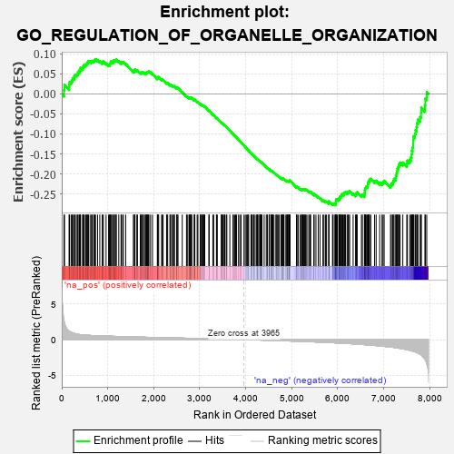
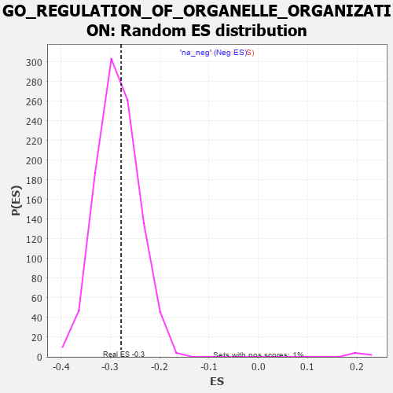

| | | Dataset | 7d |
| Phenotype | NoPhenotypeAvailable |
| Upregulated in class | na_neg |
| GeneSet | GO_REGULATION_OF_ORGANELLE_ORGANIZATION |
| Enrichment Score (ES) | -0.27827284 |
| Normalized Enrichment Score (NES) | -0.9736172 |
| Nominal p-value | 0.57746476 |
| FDR q-value | 0.90041286 |
| FWER p-Value | 1.0 |
Table: GSEA Results Summary

Fig 1: Enrichment plot: GO_REGULATION_OF_ORGANELLE_ORGANIZATION
Profile of the Running ES Score & Positions of GeneSet Members on the Rank Ordered List
| PROBE | GENE SYMBOL | GENE_TITLE | RANK IN GENE LIST | RANK METRIC SCORE | RUNNING ES | CORE ENRICHMENT | | 1 | TGFB3 | | | 49 | 2.654 | 0.0097 | No |
| 2 | RAC2 | | | 60 | 2.442 | 0.0232 | No |
| 3 | SPI1 | | | 162 | 1.182 | 0.0172 | No |
| 4 | TEX14 | | | 164 | 1.179 | 0.0242 | No |
| 5 | BUB3 | | | 172 | 1.143 | 0.0302 | No |
| 6 | RHOU | | | 210 | 1.031 | 0.0316 | No |
| 7 | RHOH | | | 228 | 0.987 | 0.0354 | No |
| 8 | CDC45 | | | 239 | 0.950 | 0.0399 | No |
| 9 | ULK1 | | | 272 | 0.875 | 0.0410 | No |
| 10 | HGF | | | 276 | 0.870 | 0.0459 | No |
| 11 | FSCN1 | | | 297 | 0.830 | 0.0483 | No |
| 12 | WEE2 | | | 333 | 0.766 | 0.0484 | No |
| 13 | GSK3A | | | 351 | 0.745 | 0.0507 | No |
| 14 | TAPT1 | | | 354 | 0.743 | 0.0549 | No |
| 15 | AXIN2 | | | 383 | 0.713 | 0.0556 | No |
| 16 | BAX | | | 387 | 0.711 | 0.0595 | No |
| 17 | NBN | | | 405 | 0.696 | 0.0615 | No |
| 18 | EED | | | 409 | 0.690 | 0.0653 | No |
| 19 | ERCC1 | | | 453 | 0.660 | 0.0637 | No |
| 20 | CNOT6 | | | 462 | 0.655 | 0.0666 | No |
| 21 | LRP1 | | | 470 | 0.648 | 0.0696 | No |
| 22 | CDC20 | | | 480 | 0.644 | 0.0724 | No |
| 23 | CNOT2 | | | 514 | 0.625 | 0.0719 | No |
| 24 | HTRA2 | | | 527 | 0.621 | 0.0740 | No |
| 25 | MCM2 | | | 546 | 0.614 | 0.0754 | No |
| 26 | YLPM1 | | | 556 | 0.611 | 0.0780 | No |
| 27 | HIRA | | | 568 | 0.608 | 0.0802 | No |
| 28 | CCNB1 | | | 581 | 0.601 | 0.0823 | No |
| 29 | NDC80 | | | 616 | 0.590 | 0.0814 | No |
| 30 | NOC2L | | | 647 | 0.578 | 0.0810 | No |
| 31 | PARN | | | 660 | 0.572 | 0.0829 | No |
| 32 | MRE11 | | | 693 | 0.560 | 0.0821 | No |
| 33 | CDC6 | | | 709 | 0.557 | 0.0835 | No |
| 34 | ID1 | | | 719 | 0.555 | 0.0857 | No |
| 35 | WDR61 | | | 734 | 0.549 | 0.0872 | No |
| 36 | RAD21 | | | 779 | 0.538 | 0.0847 | No |
| 37 | RAE1 | | | 827 | 0.524 | 0.0818 | No |
| 38 | HDAC8 | | | 881 | 0.510 | 0.0779 | No |
| 39 | PARG | | | 884 | 0.509 | 0.0807 | No |
| 40 | STOX1 | | | 905 | 0.506 | 0.0812 | No |
| 41 | CTR9 | | | 964 | 0.492 | 0.0766 | No |
| 42 | PSMG2 | | | 1018 | 0.480 | 0.0726 | No |
| 43 | AKT1 | | | 1040 | 0.476 | 0.0727 | No |
| 44 | RCC1 | | | 1043 | 0.475 | 0.0753 | No |
| 45 | MEF2C | | | 1054 | 0.473 | 0.0769 | No |
| 46 | FZD10 | | | 1065 | 0.470 | 0.0784 | No |
| 47 | WDR70 | | | 1066 | 0.470 | 0.0813 | No |
| 48 | CDK10 | | | 1092 | 0.465 | 0.0809 | No |
| 49 | SRC | | | 1128 | 0.459 | 0.0791 | No |
| 50 | KMT2A | | | 1130 | 0.458 | 0.0817 | No |
| 51 | NCK2 | | | 1131 | 0.458 | 0.0845 | No |
| 52 | UBL5 | | | 1162 | 0.452 | 0.0833 | No |
| 53 | TFDP1 | | | 1180 | 0.450 | 0.0838 | No |
| 54 | CRIPT | | | 1185 | 0.449 | 0.0860 | No |
| 55 | KAT7 | | | 1240 | 0.440 | 0.0816 | No |
| 56 | PARL | | | 1290 | 0.432 | 0.0778 | No |
| 57 | DKC1 | | | 1292 | 0.431 | 0.0803 | No |
| 58 | SSRP1 | | | 1323 | 0.424 | 0.0790 | No |
| 59 | TBCD | | | 1338 | 0.422 | 0.0797 | No |
| 60 | FKBP4 | | | 1390 | 0.412 | 0.0755 | No |
| 61 | DDHD2 | | | 1557 | 0.381 | 0.0561 | No |
| 62 | TADA3 | | | 1580 | 0.378 | 0.0555 | No |
| 63 | CDC27 | | | 1585 | 0.377 | 0.0573 | No |
| 64 | PAF1 | | | 1588 | 0.376 | 0.0593 | No |
| 65 | NPRL3 | | | 1592 | 0.375 | 0.0612 | No |
| 66 | DRG1 | | | 1633 | 0.368 | 0.0582 | No |
| 67 | TPPP | | | 1646 | 0.365 | 0.0588 | No |
| 68 | TPX2 | | | 1708 | 0.355 | 0.0530 | No |
| 69 | KMT2E | | | 1730 | 0.350 | 0.0524 | No |
| 70 | ESPL1 | | | 1734 | 0.349 | 0.0541 | No |
| 71 | WAPL | | | 1758 | 0.344 | 0.0532 | No |
| 72 | LRP5 | | | 1769 | 0.342 | 0.0539 | No |
| 73 | FNIP1 | | | 1798 | 0.338 | 0.0523 | No |
| 74 | FMR1 | | | 1816 | 0.334 | 0.0521 | No |
| 75 | UVRAG | | | 1831 | 0.332 | 0.0523 | No |
| 76 | RTF1 | | | 1844 | 0.329 | 0.0527 | No |
| 77 | OTUB1 | | | 1857 | 0.326 | 0.0531 | No |
| 78 | SMAD4 | | | 1860 | 0.326 | 0.0549 | No |
| 79 | NUP62 | | | 1871 | 0.324 | 0.0555 | No |
| 80 | PAK3 | | | 1889 | 0.322 | 0.0552 | No |
| 81 | CUL3 | | | 1893 | 0.321 | 0.0568 | No |
| 82 | TASOR | | | 1931 | 0.316 | 0.0539 | No |
| 83 | ZW10 | | | 1973 | 0.309 | 0.0504 | No |
| 84 | KDM3A | | | 2078 | 0.294 | 0.0386 | No |
| 85 | SART3 | | | 2084 | 0.293 | 0.0397 | No |
| 86 | CENPE | | | 2086 | 0.293 | 0.0413 | No |
| 87 | TAF7 | | | 2092 | 0.292 | 0.0424 | No |
| 88 | BMP7 | | | 2107 | 0.290 | 0.0424 | No |
| 89 | MORC2 | | | 2171 | 0.281 | 0.0358 | No |
| 90 | NPRL2 | | | 2184 | 0.278 | 0.0359 | No |
| 91 | C2CD5 | | | 2204 | 0.276 | 0.0351 | No |
| 92 | NSD3 | | | 2279 | 0.263 | 0.0270 | No |
| 93 | XRCC1 | | | 2287 | 0.262 | 0.0277 | No |
| 94 | WASF1 | | | 2303 | 0.259 | 0.0273 | No |
| 95 | BCAS3 | | | 2352 | 0.253 | 0.0226 | No |
| 96 | SIN3A | | | 2361 | 0.251 | 0.0231 | No |
| 97 | SAE1 | | | 2390 | 0.247 | 0.0209 | No |
| 98 | OMA1 | | | 2408 | 0.244 | 0.0201 | No |
| 99 | MET | | | 2430 | 0.240 | 0.0189 | No |
| 100 | FEN1 | | | 2446 | 0.237 | 0.0183 | No |
| 101 | KDM1A | | | 2447 | 0.237 | 0.0198 | No |
| 102 | KAT2B | | | 2502 | 0.226 | 0.0141 | No |
| 103 | CDT1 | | | 2505 | 0.226 | 0.0152 | No |
| 104 | HUWE1 | | | 2506 | 0.225 | 0.0165 | No |
| 105 | RAD1 | | | 2528 | 0.223 | 0.0151 | No |
| 106 | BAG3 | | | 2620 | 0.209 | 0.0045 | No |
| 107 | PHB2 | | | 2712 | 0.197 | -0.0062 | No |
| 108 | SLIT2 | | | 2724 | 0.195 | -0.0065 | No |
| 109 | LMAN1 | | | 2743 | 0.192 | -0.0077 | No |
| 110 | RIOK2 | | | 2775 | 0.187 | -0.0106 | No |
| 111 | SCFD1 | | | 2783 | 0.185 | -0.0104 | No |
| 112 | XRN1 | | | 2786 | 0.185 | -0.0095 | No |
| 113 | ATR | | | 2800 | 0.183 | -0.0101 | No |
| 114 | FER | | | 2803 | 0.183 | -0.0093 | No |
| 115 | BRK1 | | | 2805 | 0.183 | -0.0083 | No |
| 116 | BECN1 | | | 2828 | 0.179 | -0.0101 | No |
| 117 | DAPK3 | | | 2880 | 0.169 | -0.0157 | No |
| 118 | PDCD5 | | | 2885 | 0.169 | -0.0152 | No |
| 119 | WDR5 | | | 2892 | 0.168 | -0.0150 | No |
| 120 | MTM1 | | | 2893 | 0.168 | -0.0140 | No |
| 121 | CDK13 | | | 2944 | 0.158 | -0.0195 | No |
| 122 | XPO1 | | | 2960 | 0.156 | -0.0206 | No |
| 123 | RTEL1 | | | 3010 | 0.148 | -0.0261 | No |
| 124 | BRD7 | | | 3018 | 0.147 | -0.0261 | No |
| 125 | WNT4 | | | 3023 | 0.146 | -0.0257 | No |
| 126 | PAN3 | | | 3054 | 0.142 | -0.0288 | No |
| 127 | FEZ1 | | | 3055 | 0.142 | -0.0279 | No |
| 128 | MAP2 | | | 3074 | 0.140 | -0.0295 | No |
| 129 | TIGAR | | | 3091 | 0.138 | -0.0307 | No |
| 130 | TLK1 | | | 3098 | 0.137 | -0.0307 | No |
| 131 | GPX1 | | | 3109 | 0.135 | -0.0311 | No |
| 132 | TWF1 | | | 3199 | 0.123 | -0.0421 | No |
| 133 | FZR1 | | | 3205 | 0.122 | -0.0420 | No |
| 134 | SMG5 | | | 3285 | 0.108 | -0.0517 | No |
| 135 | SMAD3 | | | 3303 | 0.105 | -0.0532 | No |
| 136 | FMN1 | | | 3363 | 0.095 | -0.0604 | No |
| 137 | VPS16 | | | 3370 | 0.093 | -0.0606 | No |
| 138 | GMFB | | | 3381 | 0.091 | -0.0614 | No |
| 139 | ATG3 | | | 3471 | 0.081 | -0.0725 | No |
| 140 | CNOT1 | | | 3473 | 0.081 | -0.0722 | No |
| 141 | CDK5 | | | 3480 | 0.080 | -0.0725 | No |
| 142 | FES | | | 3501 | 0.077 | -0.0746 | No |
| 143 | UBR5 | | | 3518 | 0.074 | -0.0763 | No |
| 144 | PIN1 | | | 3543 | 0.069 | -0.0790 | No |
| 145 | DMRT1 | | | 3546 | 0.068 | -0.0788 | No |
| 146 | LCMT1 | | | 3576 | 0.063 | -0.0822 | No |
| 147 | MAPK3 | | | 3589 | 0.062 | -0.0834 | No |
| 148 | FIS1 | | | 3654 | 0.051 | -0.0915 | No |
| 149 | CDC16 | | | 3724 | 0.038 | -0.1003 | No |
| 150 | SYT11 | | | 3732 | 0.036 | -0.1010 | No |
| 151 | SKI | | | 3762 | 0.032 | -0.1046 | No |
| 152 | NSD1 | | | 3779 | 0.031 | -0.1065 | No |
| 153 | SPAST | | | 3801 | 0.027 | -0.1091 | No |
| 154 | SMG1 | | | 3843 | 0.021 | -0.1143 | No |
| 155 | NEK2 | | | 3871 | 0.016 | -0.1178 | No |
| 156 | NIPBL | | | 3900 | 0.010 | -0.1214 | No |
| 157 | STX18 | | | 3962 | 0.000 | -0.1294 | No |
| 158 | VPS35 | | | 3989 | -0.006 | -0.1327 | No |
| 159 | PARP1 | | | 4014 | -0.010 | -0.1358 | No |
| 160 | MCPH1 | | | 4039 | -0.014 | -0.1389 | No |
| 161 | ATG5 | | | 4051 | -0.016 | -0.1402 | No |
| 162 | TAL1 | | | 4064 | -0.018 | -0.1417 | No |
| 163 | MTOR | | | 4114 | -0.025 | -0.1479 | No |
| 164 | ABL1 | | | 4125 | -0.027 | -0.1491 | No |
| 165 | CRK | | | 4139 | -0.031 | -0.1506 | No |
| 166 | GFI1 | | | 4168 | -0.037 | -0.1541 | No |
| 167 | SYNJ1 | | | 4173 | -0.038 | -0.1543 | No |
| 168 | VPS11 | | | 4202 | -0.041 | -0.1578 | No |
| 169 | ARPC2 | | | 4232 | -0.047 | -0.1613 | No |
| 170 | ARL2 | | | 4254 | -0.050 | -0.1637 | No |
| 171 | PAX5 | | | 4255 | -0.051 | -0.1634 | No |
| 172 | PCID2 | | | 4258 | -0.051 | -0.1634 | No |
| 173 | WNT11 | | | 4282 | -0.056 | -0.1660 | No |
| 174 | SAR1A | | | 4304 | -0.060 | -0.1684 | No |
| 175 | BAG4 | | | 4314 | -0.061 | -0.1692 | No |
| 176 | CTBP1 | | | 4323 | -0.064 | -0.1699 | No |
| 177 | OPA1 | | | 4330 | -0.065 | -0.1703 | No |
| 178 | SETD5 | | | 4343 | -0.067 | -0.1714 | No |
| 179 | ADRB2 | | | 4352 | -0.068 | -0.1721 | No |
| 180 | STX5 | | | 4400 | -0.077 | -0.1778 | No |
| 181 | CDC37 | | | 4446 | -0.084 | -0.1831 | No |
| 182 | LRRK2 | | | 4467 | -0.087 | -0.1852 | No |
| 183 | EPS8 | | | 4474 | -0.088 | -0.1855 | No |
| 184 | ILK | | | 4510 | -0.096 | -0.1895 | No |
| 185 | SNW1 | | | 4514 | -0.096 | -0.1893 | No |
| 186 | PINX1 | | | 4515 | -0.097 | -0.1887 | No |
| 187 | ABI2 | | | 4554 | -0.106 | -0.1930 | No |
| 188 | APC | | | 4558 | -0.107 | -0.1928 | No |
| 189 | PNKP | | | 4572 | -0.111 | -0.1938 | No |
| 190 | MPV17 | | | 4575 | -0.112 | -0.1934 | No |
| 191 | SYT4 | | | 4590 | -0.116 | -0.1945 | No |
| 192 | GATA3 | | | 4614 | -0.120 | -0.1968 | No |
| 193 | ARPC3 | | | 4659 | -0.129 | -0.2018 | No |
| 194 | CHMP3 | | | 4660 | -0.129 | -0.2010 | No |
| 195 | LIMK1 | | | 4684 | -0.136 | -0.2032 | No |
| 196 | ARF6 | | | 4704 | -0.140 | -0.2048 | No |
| 197 | WASF3 | | | 4730 | -0.145 | -0.2072 | No |
| 198 | POC1A | | | 4768 | -0.151 | -0.2111 | No |
| 199 | WBP2 | | | 4780 | -0.153 | -0.2116 | No |
| 200 | FLII | | | 4795 | -0.156 | -0.2125 | No |
| 201 | PLD6 | | | 4799 | -0.157 | -0.2120 | No |
| 202 | CEP97 | | | 4812 | -0.160 | -0.2126 | No |
| 203 | FBXW7 | | | 4816 | -0.161 | -0.2120 | No |
| 204 | WDR1 | | | 4824 | -0.163 | -0.2119 | No |
| 205 | DLG1 | | | 4860 | -0.169 | -0.2154 | No |
| 206 | CLU | | | 4889 | -0.174 | -0.2181 | No |
| 207 | MARK2 | | | 4899 | -0.177 | -0.2182 | No |
| 208 | CAPZB | | | 4908 | -0.179 | -0.2181 | No |
| 209 | TLK2 | | | 4909 | -0.179 | -0.2170 | No |
| 210 | ATRX | | | 4929 | -0.184 | -0.2184 | No |
| 211 | EP300 | | | 4941 | -0.186 | -0.2187 | No |
| 212 | XRCC5 | | | 4946 | -0.187 | -0.2181 | No |
| 213 | CHMP5 | | | 4952 | -0.188 | -0.2176 | No |
| 214 | ADCK1 | | | 4953 | -0.188 | -0.2165 | No |
| 215 | ARAP1 | | | 4963 | -0.191 | -0.2165 | No |
| 216 | DDX11 | | | 5102 | -0.225 | -0.2332 | No |
| 217 | MMP9 | | | 5108 | -0.227 | -0.2325 | No |
| 218 | DOC2B | | | 5113 | -0.229 | -0.2316 | No |
| 219 | FLCN | | | 5140 | -0.235 | -0.2336 | No |
| 220 | HDAC6 | | | 5183 | -0.244 | -0.2376 | No |
| 221 | ATM | | | 5210 | -0.249 | -0.2395 | No |
| 222 | TOP2A | | | 5216 | -0.250 | -0.2386 | No |
| 223 | GPSM2 | | | 5228 | -0.252 | -0.2385 | No |
| 224 | TNKS2 | | | 5239 | -0.254 | -0.2383 | No |
| 225 | SSH1 | | | 5254 | -0.258 | -0.2386 | No |
| 226 | PICK1 | | | 5265 | -0.263 | -0.2383 | No |
| 227 | CEP70 | | | 5282 | -0.267 | -0.2387 | No |
| 228 | RAB7A | | | 5302 | -0.271 | -0.2396 | No |
| 229 | RAD50 | | | 5314 | -0.276 | -0.2393 | No |
| 230 | EPHA1 | | | 5349 | -0.285 | -0.2421 | No |
| 231 | FZD5 | | | 5386 | -0.292 | -0.2450 | No |
| 232 | PLK4 | | | 5397 | -0.295 | -0.2445 | No |
| 233 | LATS1 | | | 5412 | -0.298 | -0.2445 | No |
| 234 | STIL | | | 5483 | -0.314 | -0.2518 | No |
| 235 | CEP76 | | | 5485 | -0.315 | -0.2500 | No |
| 236 | TRIM9 | | | 5526 | -0.327 | -0.2533 | No |
| 237 | SPHK1 | | | 5576 | -0.339 | -0.2576 | No |
| 238 | GNL3 | | | 5614 | -0.349 | -0.2604 | No |
| 239 | CASP8 | | | 5678 | -0.369 | -0.2664 | No |
| 240 | TTBK2 | | | 5700 | -0.376 | -0.2668 | No |
| 241 | LRFN4 | | | 5733 | -0.387 | -0.2687 | No |
| 242 | CDC23 | | | 5756 | -0.394 | -0.2692 | No |
| 243 | BBS4 | | | 5806 | -0.407 | -0.2731 | No |
| 244 | PAN2 | | | 5807 | -0.408 | -0.2706 | No |
| 245 | MTMR3 | | | 5809 | -0.408 | -0.2683 | No |
| 246 | ARPC4 | | | 5886 | -0.430 | -0.2756 | Yes |
| 247 | SET | | | 5895 | -0.434 | -0.2740 | Yes |
| 248 | LRFN1 | | | 5926 | -0.443 | -0.2753 | Yes |
| 249 | DCTN1 | | | 5950 | -0.454 | -0.2755 | Yes |
| 250 | SURF4 | | | 5951 | -0.455 | -0.2728 | Yes |
| 251 | ACTN2 | | | 5960 | -0.458 | -0.2710 | Yes |
| 252 | CNTRL | | | 5961 | -0.459 | -0.2682 | Yes |
| 253 | SH2B1 | | | 5963 | -0.459 | -0.2656 | Yes |
| 254 | CENPJ | | | 5968 | -0.460 | -0.2633 | Yes |
| 255 | SYT9 | | | 5992 | -0.469 | -0.2635 | Yes |
| 256 | JMY | | | 6023 | -0.479 | -0.2645 | Yes |
| 257 | CKAP5 | | | 6032 | -0.482 | -0.2626 | Yes |
| 258 | RAC1 | | | 6036 | -0.484 | -0.2601 | Yes |
| 259 | ADD2 | | | 6046 | -0.487 | -0.2583 | Yes |
| 260 | EVL | | | 6052 | -0.490 | -0.2560 | Yes |
| 261 | CALR | | | 6077 | -0.499 | -0.2561 | Yes |
| 262 | PLK1 | | | 6082 | -0.500 | -0.2536 | Yes |
| 263 | DBNL | | | 6084 | -0.501 | -0.2507 | Yes |
| 264 | ATG13 | | | 6110 | -0.508 | -0.2508 | Yes |
| 265 | GBA2 | | | 6136 | -0.515 | -0.2510 | Yes |
| 266 | TNKS | | | 6138 | -0.516 | -0.2480 | Yes |
| 267 | ROCK1 | | | 6152 | -0.520 | -0.2465 | Yes |
| 268 | GRID2 | | | 6170 | -0.528 | -0.2455 | Yes |
| 269 | INSR | | | 6204 | -0.538 | -0.2466 | Yes |
| 270 | TPM1 | | | 6226 | -0.545 | -0.2460 | Yes |
| 271 | CDC42 | | | 6236 | -0.548 | -0.2439 | Yes |
| 272 | SVIL | | | 6259 | -0.558 | -0.2434 | Yes |
| 273 | IFT88 | | | 6335 | -0.590 | -0.2496 | Yes |
| 274 | CDKL1 | | | 6388 | -0.610 | -0.2527 | Yes |
| 275 | RALB | | | 6399 | -0.617 | -0.2503 | Yes |
| 276 | UBE2N | | | 6407 | -0.621 | -0.2474 | Yes |
| 277 | PTPRD | | | 6423 | -0.629 | -0.2456 | Yes |
| 278 | TRPV4 | | | 6515 | -0.668 | -0.2534 | Yes |
| 279 | KANK1 | | | 6536 | -0.678 | -0.2519 | Yes |
| 280 | CLN3 | | | 6580 | -0.699 | -0.2533 | Yes |
| 281 | ARF1 | | | 6583 | -0.701 | -0.2493 | Yes |
| 282 | RNF41 | | | 6588 | -0.703 | -0.2456 | Yes |
| 283 | ALMS1 | | | 6590 | -0.704 | -0.2414 | Yes |
| 284 | TPR | | | 6597 | -0.709 | -0.2379 | Yes |
| 285 | PIF1 | | | 6604 | -0.713 | -0.2343 | Yes |
| 286 | ATL3 | | | 6619 | -0.723 | -0.2318 | Yes |
| 287 | PTPRS | | | 6646 | -0.738 | -0.2307 | Yes |
| 288 | RAB5A | | | 6655 | -0.741 | -0.2273 | Yes |
| 289 | VPS18 | | | 6659 | -0.743 | -0.2231 | Yes |
| 290 | CLIP1 | | | 6667 | -0.746 | -0.2195 | Yes |
| 291 | CPLX1 | | | 6684 | -0.753 | -0.2170 | Yes |
| 292 | PAK1 | | | 6691 | -0.757 | -0.2132 | Yes |
| 293 | GSK3B | | | 6719 | -0.768 | -0.2121 | Yes |
| 294 | SPEF1 | | | 6801 | -0.815 | -0.2178 | Yes |
| 295 | FHOD3 | | | 6835 | -0.834 | -0.2170 | Yes |
| 296 | ESPN | | | 6911 | -0.873 | -0.2215 | Yes |
| 297 | DNM1L | | | 6963 | -0.913 | -0.2227 | Yes |
| 298 | PDE2A | | | 6985 | -0.927 | -0.2198 | Yes |
| 299 | DZIP1 | | | 7009 | -0.940 | -0.2171 | Yes |
| 300 | SYT1 | | | 7148 | -1.033 | -0.2289 | Yes |
| 301 | COTL1 | | | 7166 | -1.046 | -0.2248 | Yes |
| 302 | TSPO | | | 7194 | -1.065 | -0.2218 | Yes |
| 303 | MFN2 | | | 7208 | -1.081 | -0.2170 | Yes |
| 304 | TCHP | | | 7224 | -1.099 | -0.2122 | Yes |
| 305 | KIF9 | | | 7261 | -1.135 | -0.2101 | Yes |
| 306 | CDK9 | | | 7266 | -1.138 | -0.2037 | Yes |
| 307 | CIB1 | | | 7280 | -1.152 | -0.1984 | Yes |
| 308 | PARP3 | | | 7289 | -1.158 | -0.1924 | Yes |
| 309 | MSX2 | | | 7299 | -1.171 | -0.1865 | Yes |
| 310 | GRN | | | 7319 | -1.194 | -0.1817 | Yes |
| 311 | CYLD | | | 7333 | -1.206 | -0.1761 | Yes |
| 312 | WDR35 | | | 7357 | -1.225 | -0.1717 | Yes |
| 313 | NEK7 | | | 7415 | -1.285 | -0.1713 | Yes |
| 314 | DDHD1 | | | 7501 | -1.397 | -0.1740 | Yes |
| 315 | VDAC1 | | | 7512 | -1.409 | -0.1667 | Yes |
| 316 | ENO4 | | | 7564 | -1.495 | -0.1643 | Yes |
| 317 | SAXO1 | | | 7592 | -1.543 | -0.1585 | Yes |
| 318 | KANK3 | | | 7605 | -1.559 | -0.1506 | Yes |
| 319 | IWS1 | | | 7613 | -1.587 | -0.1419 | Yes |
| 320 | PKD1 | | | 7628 | -1.611 | -0.1339 | Yes |
| 321 | CROCC | | | 7639 | -1.628 | -0.1253 | Yes |
| 322 | MNS1 | | | 7642 | -1.633 | -0.1157 | Yes |
| 323 | MCU | | | 7644 | -1.637 | -0.1059 | Yes |
| 324 | TRPM2 | | | 7680 | -1.712 | -0.1000 | Yes |
| 325 | MDM1 | | | 7691 | -1.742 | -0.0908 | Yes |
| 326 | BOK | | | 7715 | -1.817 | -0.0828 | Yes |
| 327 | DCP2 | | | 7724 | -1.833 | -0.0727 | Yes |
| 328 | RNF31 | | | 7744 | -1.895 | -0.0637 | Yes |
| 329 | GRIK5 | | | 7792 | -2.044 | -0.0574 | Yes |
| 330 | DCDC2 | | | 7813 | -2.099 | -0.0473 | Yes |
| 331 | ANK1 | | | 7815 | -2.146 | -0.0344 | Yes |
| 332 | CAV3 | | | 7896 | -2.739 | -0.0282 | Yes |
| 333 | PLCB1 | | | 7904 | -2.841 | -0.0119 | Yes |
| 334 | ARRB1 | | | 7935 | -3.377 | 0.0047 | Yes |
Table: GSEA details [plain text format]

Fig 2: GO_REGULATION_OF_ORGANELLE_ORGANIZATION: Random ES distribution
Gene set null distribution of ES for GO_REGULATION_OF_ORGANELLE_ORGANIZATION